Part 3 Examining and Summarizing Data
3.1 Objectives
- Examine and summarize the Ch. 4 data.
- Create and use a custom function
- Summarize data by group (treatment and control):
- Use the
by()function - Calculate standardized mean difference and variance ratio on a covariate
- Create a factor variable from a numeric variable
- Plot data by group
- Use the
3.2 Examining the Data
Let’s read in some data:
ny <- read.csv("Ch04_ny.csv")It’s a good idea to look at our data frame and make sure it is in the format we expect. We should verify that the object is a data frame, that the number of observations and variables is as we expect, and that we have a list of the variable names.
3.2.1 The Data Frame
Let’s examine the data. We can look at the list of variables, using the str() function, as we did in an earlier part
str(ny)## 'data.frame': 521 obs. of 4 variables:
## $ s_id : int 42 194 218 261 304 323 339 348 349 386 ...
## $ voucher : int 0 0 1 1 1 1 1 1 1 0 ...
## $ pre_ach : num 74 7.5 2.5 0 11 8.5 0 37 71 24 ...
## $ post_ach: num 83 4 3.5 26.5 2 15 23.5 52 60 13 ...3.2.1.1 Checking for Missing Data
Let’s see if there are any missing data in each column. We’ll use this code sum(is.na(x)). In Base R language, the code is like mathematics, where we go from the inside out. So, is.na(x) is done first—we’ll replace x with our vector when we use this—and then the sum() function is performed on that result.
The is.na() function is a logical test, where if a cell in our vector is NA (i.e., missing), it is coded as TRUE. As we mentioned in the previous part of this tutorial, logical values (TRUE and FALSE) are treated as numeric (1 and 0 respectively), meaning that we can perform some mathematical operations on them. So, if we use the sum() function on those values, it counts the number of cells in a vector that are missing.
We can use our custom function on a column of our data frame. Let’s use it on the pre_ach variable:
sum(is.na(ny[, "pre_ach"]))## [1] 0There are no missing data in this column of our data.
Let’s do this on every column of the data frame, using the apply() function around it. There are three arguments in the apply() function: The first one is the data frame, the second is the margin (which I always forget, but 1 refers to doing this operation on the rows (across the columns) and 2 refers to performing the operation on the columns (across the rows). The third argument is the operation. Because we’re actually using two of Base R’s functions together, is.na() and sum(), it is not a single function. To get the apply() function to work, we can create a short custom function. Here, we use the function() function and define an argument, x as a placeholder for the vector that we’ll apply this function on. After that, we include the code sum(is.na(x)). This tells the apply() function to do this operation on every column of the data.6
apply(ny[ , ], 2, function(x) sum(is.na(x)) )## s_id voucher pre_ach post_ach
## 0 0 0 0We’ll practice a lot with custom functions in this course. Later in this particular lesson, we’ll see this process further explained.
3.2.1.2 Other Functions for Examining a Data Frame
Some other functions we can use to look at the data frame are. dim(), str(inc), head(),and tail() are common. class() tells us what type of R format the thing is (e.g., if it is a matrix, a vector, a data frame, and so forth).
dim(ny)
class(ny)
names(ny) #names of the columns
head(ny)
tail(ny)
summary(ny) 3.2.1.3 Column and Row Names
The names() function displays the names of the columns. We can use that later. Sometimes when we many column names and we want to use them in our code, we don’t want to type them all the time. A handy function is dput(), as this will output the list of names into the console in a format we can then copy and paste in our code. Try this:
dput(names(ny))## c("s_id", "voucher", "pre_ach", "post_ach")If we copied that and pasted it into our code, we can mess around with it. For instance, if I wanted to remove the ID column, I could use delete that part and include this c("voucher", "pre_ach", "post_ach").
There’s also a rownames() function. Right now, our rows do not have names, but we could make them the same as their ID.
rownames(ny) <- ny$s_id3.2.2 Subsetting by Rows
Now, we can use the name in our indexing. For example, ny["21825",] includes the row of data of the person whose ID was 21825.7
ny["21825",]## s_id voucher pre_ach post_ach
## 21825 21825 1 22 6Row names and column names should, of course, be unique.
An alternative code, if we don’t want to use row names is this:
ny[ny$s_id == 21825, ]## s_id voucher pre_ach post_ach
## 21825 21825 1 22 6The ny$s_id == "21825" in the row part of the index says to include only rows with this value. We can use this to select all observations with a value, such as all of the people who received a voucher (in the treatment group, in this example). (The output is suppressed from this code because it would be long on the webpage.)
ny[ny$voucher == 1, ]3.2.3 Subsetting by Columns
We used the dput() function above to get the names of the columns in a format that is amenable to our code. Let’s use that stuff, the c("s_id", "voucher", "pre_ach", "post_ach") but with out the ID variable. We can also index the first 5 observations.
ny[1:5, c("voucher", "pre_ach", "post_ach")]## voucher pre_ach post_ach
## 42 0 74.0 83.0
## 194 0 7.5 4.0
## 218 1 2.5 3.5
## 261 1 0.0 26.5
## 304 1 11.0 2.0Notice that we need quotes around column names. But, we can assign a set of names to an object and use that object in the same way:
mycolnames <- c("voucher", "pre_ach", "post_ach")
ny[1:5, mycolnames]## voucher pre_ach post_ach
## 42 0 74.0 83.0
## 194 0 7.5 4.0
## 218 1 2.5 3.5
## 261 1 0.0 26.5
## 304 1 11.0 2.0Objects are not enclosed in quotes.
3.2.4 Descriptive Statistics
We can use the summary() function to get a limited set of descriptive statistics:
summary(ny[ , mycolnames ])## voucher pre_ach post_ach
## Min. :0.0000 Min. : 0.00 Min. : 0.00
## 1st Qu.:0.0000 1st Qu.: 6.50 1st Qu.: 8.00
## Median :1.0000 Median :15.50 Median :18.00
## Mean :0.5585 Mean :20.16 Mean :23.87
## 3rd Qu.:1.0000 3rd Qu.:28.50 3rd Qu.:35.00
## Max. :1.0000 Max. :92.00 Max. :89.00Notice that voucher is a dichotomous variable, coded as 0 or 1. Because it is numeric, the mean is the proportion of the sample that is coded as 1, so here 55.85% of the observations were in the treatment group. We can see the range, mean, and 1st, 2nd, and 3rd quartiles of the other two variables. It seems like the top of the range is really high above the 3rd quartiles. Students are not scoring high.
We can use Base R’s built in functions, too, such as mean(), sd(), and var(). We can use length() for the number of cells in a column (or row), and we can use sum(!is.na()) for the number of non-missing data. Here ! stands for “not,” so this sums the number of non-missing observations. In our data set, there are no missing data, so these return the same value of \(521\):
length(ny$pre_ach)## [1] 521sum(!is.na(ny$pre_ach))## [1] 5213.2.5 Creating a Custom Function to Estimate the Confidence Interval of the Mean
Let’s create our own function to examine the confidence intervals around the mean. We can use base R’s functions inside of our custom function.
Let’s start with a simple example of how to create a custom function. The result here should give us the same result as R’s built-in function, mean():
mean(ny$post_ach)## [1] 23.8666Here, we’re calling our custom function MyMean(). We should use names for our functions that are not already used by Base R (unless we don’t care about replacing them during our session.) For example, we would not use mean for our custom function name, but we could use mymean or MyMean. If in doubt use “my” as a prefix. You can also search if there are any existing functions with a name by using ? before a word in R to see if it comes up in the help (or, if you’re in RStudio, clicking on it and pressing F1 on your keyboard). If it does, you can tell it is a function.8
Come to think of if, for any object we create in R, we should not use existing function names. For example, we should not write this code mean <- mean(ny$post_ach) because the object we would be creating and naming mean would be a name that is already taken by the mean() function in Base R. Instead, we could use upper case, Mean, because that is not a function in R, or we could use M or mean_x or something like that.
Here is our custom function:
MyMean <- function(x){
M <- sum(x)/length(x)
return(M)
}
MyMean(ny$post_ach)## [1] 23.8666What we’re doing is using the function() function to create an operation. We include in parentheses the list of arguments in our function. Here we only have one argument, x, which represents the vector we’re going to use this operation on. Then, within the braces ({ and }), we place our set of functions on those arguments. In this example, we’re summing the values in a vector and dividing by the number of elements in that vector, then we’re assigning that result to an object, M, which is outputted. The return() function is on the last line and is used to explicitly output the final result. Often, we are lazy and simply type the object we want printed, so we could replace return(M) with M and get the same result.
Let’s create our custom function to estimate the confidence interval and other descriptive statistics. Here, we’re calling our function myci for “my confidence intervaller” or something like that. We’re getting the standard error of the mean, using a t distribution (which is more conservative than a z distribution when we have small samples) to get the margin of error on both sides of the point estimate (i.e., of the mean) to get the lower and upper bound of the confidence interval. If you want to use a z distribution, use qnorm() (e.g., qnorm(.975)). In this data set, these are really similar, about \(1.96\) because the n-size (used for the degrees of freedom in the t statistic) is fairly big.9
The final line is what is outputted. We’re naming the variables, N, Var, M, and so forth.
myci <- function(x){
m <- mean(x)
v <- var(x)
n <- length(x)
se <- sqrt(v/n)
tcut<- qt(.975, df = n-1, lower.tail = T) # qnorm(.975, lower.tail = T)
moe <- tcut*se
lb <- m-moe
ub <- m+moe
ci <- c(lb,ub)
round( c(N=n, Var=v, M=m, SEm=se, CI_lb=lb, CI_ub=ub),3)
}Let’s try out our custom function:
myci(ny$post_ach)## N Var M SEm CI_lb CI_ub
## 521.000 368.982 23.867 0.842 22.213 25.520Sometimes, we can use functions with the apply() function to get the results across two or more columns:10
apply(ny[, c("pre_ach", "post_ach")], 2, myci)## pre_ach post_ach
## N 521.000 521.000
## Var 333.253 368.982
## M 20.164 23.867
## SEm 0.800 0.842
## CI_lb 18.593 22.213
## CI_ub 21.735 25.520We also might want to transpose this, using the t() function, and save it to an object:
MyDesc <- t(apply(ny[, c("pre_ach", "post_ach")], 2, myci))
MyDesc## N Var M SEm CI_lb CI_ub
## pre_ach 521 333.253 20.164 0.800 18.593 21.735
## post_ach 521 368.982 23.867 0.842 22.213 25.5203.2.5.1 Plots
Let’s examine some simple histograms and then some box plots. We expect the pre-condition achievement data to be positively skewed because one of the criteria for inclusion in the voucher program study was low achievement scores (though if the pre-test were used, the data would be truncated). Let’s see if this is the case:
hist(ny$pre_ach) 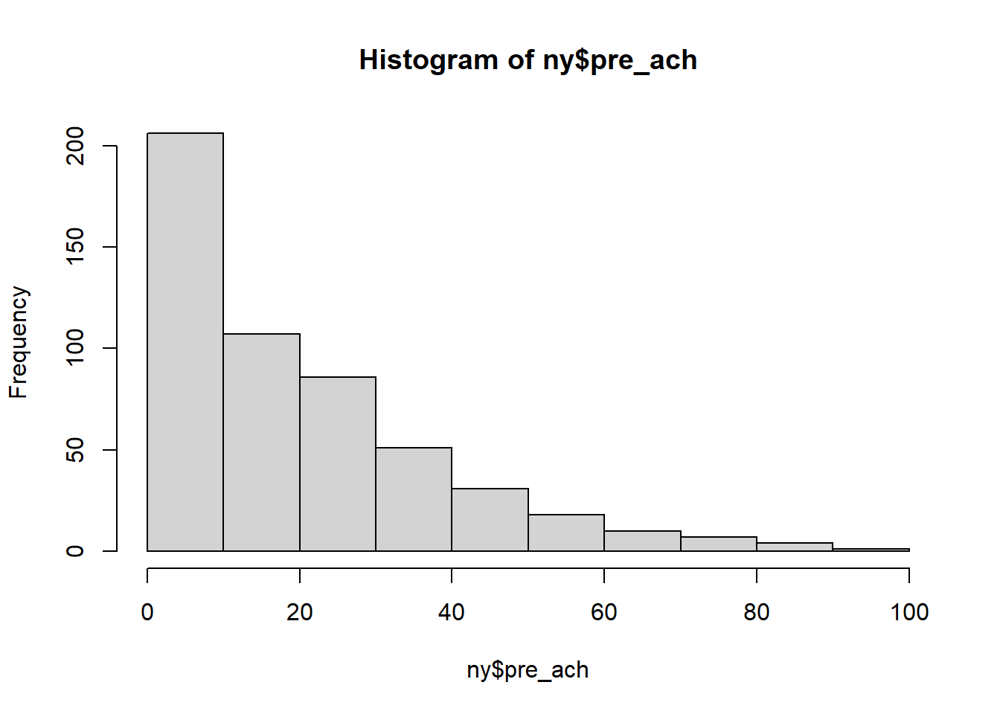
Yes, the scores are positively skewed.
Is it the same for the post test?
hist(ny$post_ach)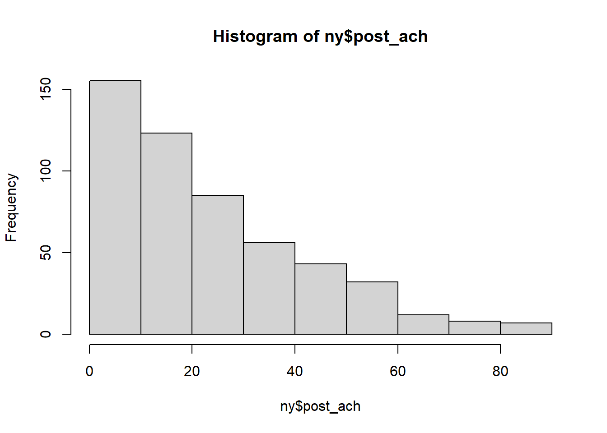
It is. Notice that the pre- and post-test histograms differ in the range in their X axes. Let’s set the X axis limits to be \(0\) to \(100\). We can also add main titles and axis labels.11
hist(ny$pre_ach, xlim = c(0,100),
main = "Pre-condition" , xlab = "Achievement") 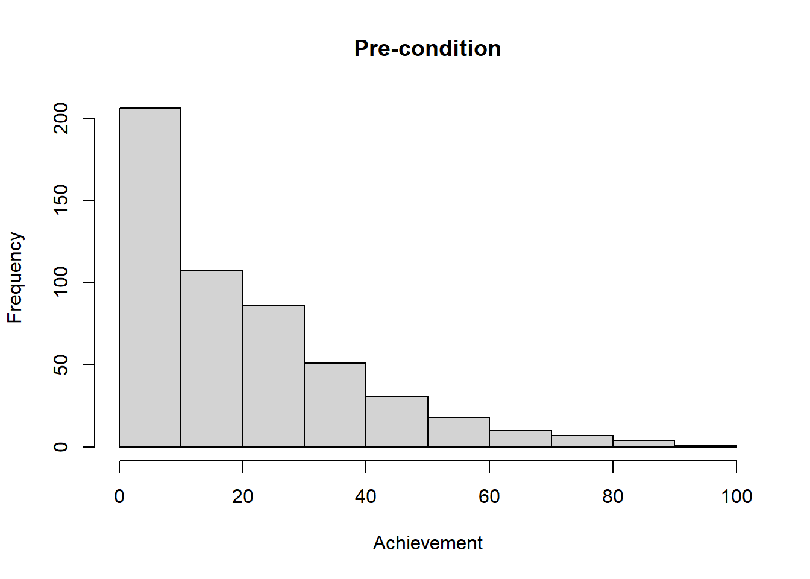
hist(ny$post_ach, xlim = c(0,100),
main = "Post-condition", xlab = "Achievement")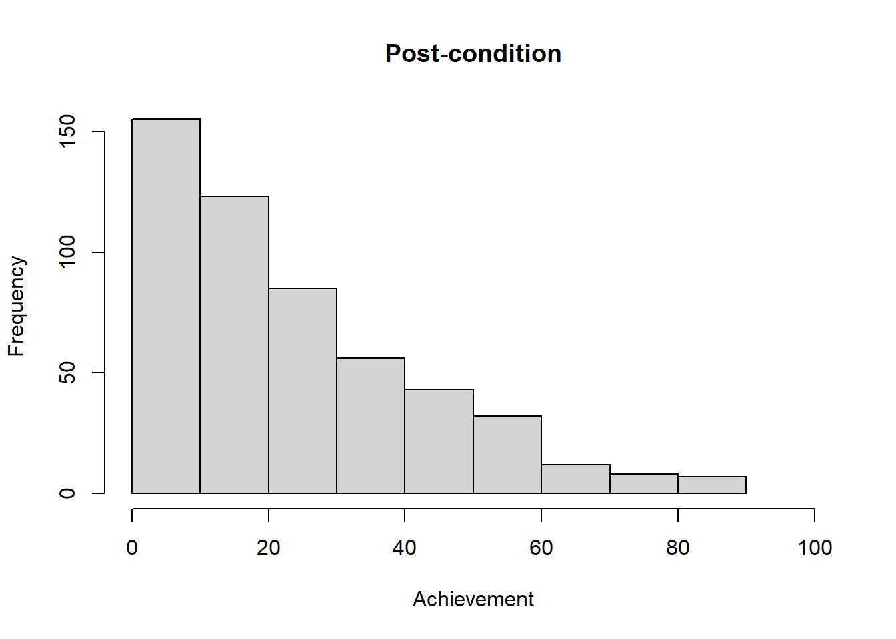
The histogram for the post test is slightly less positively skewed than that for the pre-test. It seems as though the test got slightly less difficult (assuming there is not an instrumentation effect or if the two tests are scaled to be the same level of difficulty).
Let’s look at a box plot of the data. As is typical of boxplots, here are the meanings of the components: The middle horizontal line is the median, the box is the inter-quartile range (IQR) (i.e., 3rd quartile \(-\) 1st quartile), with the top and bottom of the box being quartiles 1 and 3, (so, the box is the middle 50%) and the whiskers being at \(1.5(IQR) + Q3\) on top and \(1.5(IQR) - Q1\) on the bottom (or the minimum of 0, in this case). The circles are outliers.
boxplot(ny$post_ach,
main = "Post-intervention Achievement")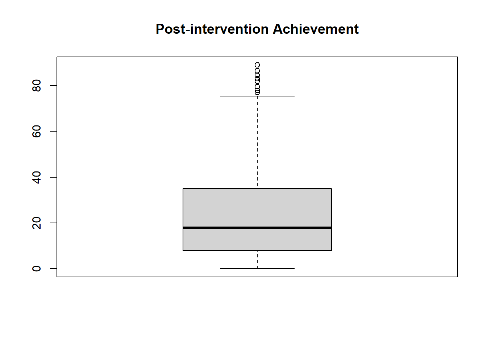
For fun, let’s add a point to the boxplot that shows where the mean is. First, we create an object that has the mean, then add the point to the plot:
postmean <- mean(ny$post_ach)
boxplot(ny$post_ach,
main = "Post-intervention Achievement")
points(postmean,
col = "blue",
pch = 16,
cex = 1.5)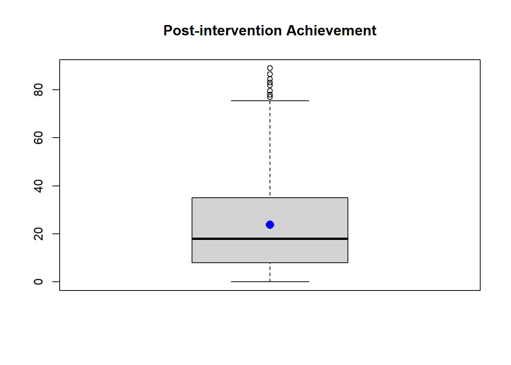
R automatically added this points() function information to the most recent plot. Here, we added a point at the location on the Y axis (postmean), the location of which is inside the box of the box plot. We made the point color blue, specified the type of point (see ?pch for more plot character options), and made the size of the point 50% bigger than the default with cex = 1.5. (cex stands for character expansion, with 1 being 100% of the default size, values < 1 making it smaller (e.g., cex = 0.75 for 75% of the size), and values > 1 making bigger (e.g., cex = 2 for twice as big as the default). Try messing around with these numbers to see what happens.
In looking at the boxplot, we can again see that the data are positively skewed, which makes sense because eligibility into the study was based on low-SES status (as described on p. 47 of Murnane & Willet).
3.3 Summarizing Data by Group (and an introduction to lists)
There are many ways to accomplish the same thing in R. One way to examine data by group is with the by() function. This function puts the output into a list format (which is annoying, but we’ll work with that).
grpci.pre <- by(ny$pre_ach, ny$voucher, myci)
grpci.pre## ny$voucher: 0
## N Var M SEm CI_lb CI_ub
## 230.000 311.993 19.513 1.165 17.218 21.808
## ------------------------------------------------------------
## ny$voucher: 1
## N Var M SEm CI_lb CI_ub
## 291.000 350.589 20.679 1.098 18.518 22.839The arguments are the variable, the group, and the function, which here is our custom function, myci().
grpci.post <- by(ny$post_ach, ny$voucher, myci)
grpci.post## ny$voucher: 0
## N Var M SEm CI_lb CI_ub
## 230.000 330.234 21.130 1.198 18.769 23.491
## ------------------------------------------------------------
## ny$voucher: 1
## N Var M SEm CI_lb CI_ub
## 291.000 390.221 26.029 1.158 23.750 28.308What type of object is the output, grpci.post? Maybe we can use the class() function:
class(grpci.post)## [1] "by"Useless! The class() function labels this object by the function we used; this isn’t informative at all. Usually, the class() function is helpful. Not now (welcome to Base R language).
Let’s try is.matrix(), is.vector(), is.logical() and so forth:
is.matrix(grpci.post)## [1] FALSEIt’s not a matrix.
is.vector(grpci.post) ## [1] FALSENot a vector.
is.data.frame(grpci.post) ## [1] FALSENor a data frame.
is.list(grpci.post)## [1] TRUEIt is a list.
Outputs from by() functions are in the format of a list. Lists can contain a collection and variety of components, each of which can be a matrix, vector, data frame, or even another list. Let’s change our outputted list into a vector or data frame so we can actually use the output.
In the next lines, the brackets returns the component in that position in the list. For instance, grpci.post[1] returns the ny$voucher 0 component of our group, which in our list is a numeric vector.
grpci.post[1] ## $`0`
## N Var M SEm CI_lb CI_ub
## 230.000 330.234 21.130 1.198 18.769 23.491In the output, after the dollar sign, we see the name of the group, which in this case is 0, which is our control group.
We sometimes use double brackets to extract the elements within a list component (i.e., without the dollar sign and zero part).
grpci.post[[1]] ## N Var M SEm CI_lb CI_ub
## 230.000 330.234 21.130 1.198 18.769 23.491Using the unlist() function, let’s unlist the contents from the voucher and nonvoucher components of our list. Unlisting creates a vector.
NoVouchPost <- unlist(grpci.post[[1]])
is.vector(NoVouchPost) # Now it's a vector## [1] TRUEAnd now for the treatment group:
VoucherPost <- unlist(grpci.post[[2]])
is.vector(VoucherPost)## [1] TRUELet’s append these two vectors, as rows in an object:
(post <- rbind(VoucherPost, NoVouchPost))## N Var M SEm CI_lb CI_ub
## VoucherPost 291 390.221 26.029 1.158 23.750 28.308
## NoVouchPost 230 330.234 21.130 1.198 18.769 23.491Is this a data frame?
class(post)## [1] "matrix" "array"No. It’s a matrix. If we combine vectors together, they form a matrix. The rbind() function appends rows together (it binds rows), so these two numeric strings are now in a matrix.
Let’s coerce this to be in a data frame:12
post <- data.frame(post)
class(post)## [1] "data.frame"post## N Var M SEm CI_lb CI_ub
## VoucherPost 291 390.221 26.029 1.158 23.750 28.308
## NoVouchPost 230 330.234 21.130 1.198 18.769 23.4913.3.1 Calculating Standardized Mean Difference and Variance Ratio of a Covariate
Let’s use the by() function to examine pre-achievement differences between the control and treatment groups’ means. We will also examine the ratio of these two groups’ variances. This is a way to examine balance in our sample. In the population of many randomized group-assignment procedures, balance will be perfect because of equivalence of expectation. That is, the mean difference will be \(0\) and the variance ratio will be \(1\). But, ours is but one possible randomization, so we might wish to investigate this to determine whether we have an idiosyncratic sample.
Here, we’re storing the mean of the control (mc) and treatment group (mt) and their variances (vc and vt). Then, we’re calculating the standardized difference between the means, using the pooled std. deviation (like Cohen’s d) and the variance ratio.
(mby <- unlist(by(ny$pre_ach, ny$voucher, mean)))## ny$voucher: 0
## [1] 19.51304
## ------------------------------------------------------------
## ny$voucher: 1
## [1] 20.67869mc <- mby[1]
mt <- mby[2]
Mdiff <- mt-mcSo, Mdiff contains the mean difference between the treatment and control groups on this variable. We’ll use this as the numerator in the estimation of the standardized mean difference.
Here’s are the variances, to be used in the variance ratio.
(vby <- unlist(by(ny$pre_ach, ny$voucher, var)))## ny$voucher: 0
## [1] 311.9933
## ------------------------------------------------------------
## ny$voucher: 1
## [1] 350.5886vc <- vby[1]
vt <- vby[2]Now to calculate the standardized mean difference:
B <- Mdiff/sqrt((vt+vc)/2)The variance ratio:
R <- vt/vcAnd, here they are together for the report of the imbalance statistics
imbal <- c(Mdiff, B, R)
names(imbal) <- c("Mean.Diff", "Std.Mean.Diff", "Var.Ratio")
imbal## Mean.Diff Std.Mean.Diff Var.Ratio
## 1.16565068 0.06404181 1.12370577In a subsequent lesson, we’ll stick all of this in a customized function and apply it to multiple covariates.
3.3.1.1 Plotting the Standardized Mean Difference & Variance Ratio
We can use a plot to visually represent whether there is imbalance. Here, the standardized mean difference is on the X axis and the variance ratio is on the Y axis. We’re also placing lines at Rubin’s benchmarks. The abline() function adds lines (with “a” and “b” representing traditional regression a parameter for the intercept and b parameter for the slope); the h = 1 creates a horizontal line at a value of \(1\) on the Y axis; the v = 0 creates a vertical line at \(0\) on the X axis. The lty = argument specifies the line type (solid in this case). See https://www.statmethods.net/advgraphs/parameters.html for a list of other plot options. Here, we used the text() option to add a label to our point; this will become useful when we do this with more covariates.
B <- imbal["Std.Mean.Diff"]
R <- imbal["Var.Ratio"]
plot(B, R,
xlim = c(-1, 1),
ylim = c(.6, 1.6),
pch = 16,
main = 'Imbalance',
xlab = 'Std. Mean Difference',
ylab = 'Variance Ratio')
abline(h = 1,
v = 0)
abline(h = c(4/5, 5/4), # adding Rubin's benchmarks
v = c(-.1, .1),
lty = 3)
text(x = B, y = R, labels = "Prescore",
pos = 4, offset = .4, cex = 1)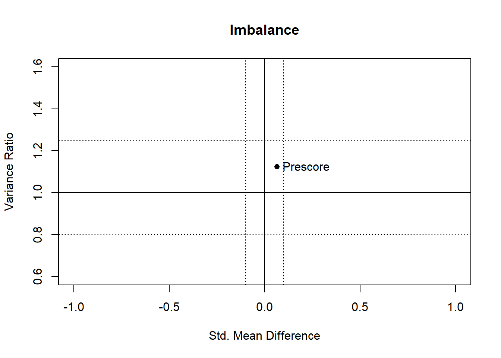
Because the point is within Rubin’s benchmarks, the assignment variable was not out of balance on the pre-achievement variable. This makes sense because the assignment was random. If we had noticed there was imbalance, and we had not yet conducted the experiment (and not yet collected post-achievement data), we could re-randomize our data (though, then the question emerges about the extent to which it is truly random because now we’re meddling with the randomization—there might be some way to adjust the statistical significance if this is a worry).
This type of plot is useful when we have many covariates to examine for balance, particularly when the assignment process was not random. I hope this foreshadows what we will do later in the course.
3.3.2 Creating a Factor Variable from a Numeric Variable
Before we use the aggregate() function, let’s create a factor variable for our plots.
Factors are nice for graphs and t tests. Let’s create a factor from our numeric version of this variable. Because 0 and 1 are the original numeric levels in the voucher variable, we need to include them in the levels = c() argument. These (0 and 1) get coded as the names of the two levels; that is, they are no longer numeric values—they’re kind of like characters.
ny$vouchF <- factor(ny$voucher,
levels = c(0,1))
levels(ny$vouchF) ## [1] "0" "1"We can see that the levels are 0 and 1, which correspond to the no-voucher and voucher conditions.
summary(ny$vouchF)## 0 1
## 230 291We see that summary now reports the frequency counts instead of the mean, median, and so forth that we get with numeric variables.
Let’s look at the structure of our data frame. Notice that R labels these levels as 0 and 1, as we expect, but uses the factor codes 1 and 2 (for 1st and 2nd level) under the hood.
str(ny)## 'data.frame': 521 obs. of 5 variables:
## $ s_id : int 42 194 218 261 304 323 339 348 349 386 ...
## $ voucher : int 0 0 1 1 1 1 1 1 1 0 ...
## $ pre_ach : num 74 7.5 2.5 0 11 8.5 0 37 71 24 ...
## $ post_ach: num 83 4 3.5 26.5 2 15 23.5 52 60 13 ...
## $ vouchF : Factor w/ 2 levels "0","1": 1 1 2 2 2 2 2 2 2 1 ...This is confusing, so let’s change the levels so that we can better keep track of them (the order of names is important here, so our level names should be the same order as our original levels):
levels(ny$vouchF) <- c("NoVouch", "Voucher") Let’s make sure the level assignment was done correctly:
levels(ny$vouchF)## [1] "NoVouch" "Voucher"Let’s make sure the frequency of observations in the two levels is the same as with 0 and 1 levels:
summary(ny$vouchF)## NoVouch Voucher
## 230 291We can also see if the factor levels are labeled the way we want.
head(ny)## s_id voucher pre_ach post_ach vouchF
## 42 42 0 74.0 83.0 NoVouch
## 194 194 0 7.5 4.0 NoVouch
## 218 218 1 2.5 3.5 Voucher
## 261 261 1 0.0 26.5 Voucher
## 304 304 1 11.0 2.0 Voucher
## 323 323 1 8.5 15.0 VoucherBehind the scenes, R still codes these as 1 and 2 respectively:
str(ny)## 'data.frame': 521 obs. of 5 variables:
## $ s_id : int 42 194 218 261 304 323 339 348 349 386 ...
## $ voucher : int 0 0 1 1 1 1 1 1 1 0 ...
## $ pre_ach : num 74 7.5 2.5 0 11 8.5 0 37 71 24 ...
## $ post_ach: num 83 4 3.5 26.5 2 15 23.5 52 60 13 ...
## $ vouchF : Factor w/ 2 levels "NoVouch","Voucher": 1 1 2 2 2 2 2 2 2 1 ...This ordering affects the order in which the factors are printed out in graphs. It also affects which level t-tests treat as the comparison condition. Let’s reverse the order so we’ll see the treatment first in plots and so that our t-test (later on) will treat the NoVouch group as the control condition. We re-order levels by creating a factor variable from our existing factor variable, and labeling the levels exactly the same as before, but in the order we want:
ny$vouchF<- factor(ny$vouchF,
levels = c("Voucher", "NoVouch") )The labels “Voucher” and “NoVouch” are now the 1st and 2nd level, respectively:
str(ny)## 'data.frame': 521 obs. of 5 variables:
## $ s_id : int 42 194 218 261 304 323 339 348 349 386 ...
## $ voucher : int 0 0 1 1 1 1 1 1 1 0 ...
## $ pre_ach : num 74 7.5 2.5 0 11 8.5 0 37 71 24 ...
## $ post_ach: num 83 4 3.5 26.5 2 15 23.5 52 60 13 ...
## $ vouchF : Factor w/ 2 levels "Voucher","NoVouch": 2 2 1 1 1 1 1 1 1 2 ...The behind-the-scenes factors are now 2 for NoVouch and 1 for Voucher. Let’s look at some observations to verify that on the front end our labels are still correct. That is, the NoVouch in our factor variable (vouchF) corresponds with 0 in our numeric variable (voucher):
head(ny) ## s_id voucher pre_ach post_ach vouchF
## 42 42 0 74.0 83.0 NoVouch
## 194 194 0 7.5 4.0 NoVouch
## 218 218 1 2.5 3.5 Voucher
## 261 261 1 0.0 26.5 Voucher
## 304 304 1 11.0 2.0 Voucher
## 323 323 1 8.5 15.0 Vouchersummary(ny) ## s_id voucher pre_ach post_ach vouchF
## Min. : 42 Min. :0.0000 Min. : 0.00 Min. : 0.00 Voucher:291
## 1st Qu.: 4187 1st Qu.:0.0000 1st Qu.: 6.50 1st Qu.: 8.00 NoVouch:230
## Median :11141 Median :1.0000 Median :15.50 Median :18.00
## Mean :10436 Mean :0.5585 Mean :20.16 Mean :23.87
## 3rd Qu.:15928 3rd Qu.:1.0000 3rd Qu.:28.50 3rd Qu.:35.00
## Max. :21825 Max. :1.0000 Max. :92.00 Max. :89.00It is sometimes a good idea to include both a numeric (dummy contrast code) and a factor version of our dichotomous variables, like we’re doing here. Use 0 and 1 for the numeric version, and names for the factor version. I like to add uppercase “F” to my factor variables so I can distinguish them from numeric versions. We can use the factor version in t-tests and the numeric versions in regression (glm).
3.3.3 The aggregate() function
To me, this should really be called disaggregate function because that’s what it does. This is similar to the by() function but this is great when you just want a single operation (such as the mean or variance) to be done on each of the two groups. The aggregate() function can use the formula format for the first argument (i.e., y ~ x); so, we can imagine that our outcome variable, post_ach is being predicted by our grouping variable, vouchF (though we’re not testing significance). We can specify the data frame in the data = argument, and the function we want to use (the mean in this case) in the FUN = argument. (We can delete FUN = and still get the result.)
grpm <- aggregate(post_ach ~ vouchF,
data = ny,
FUN = mean)
grpm## vouchF post_ach
## 1 Voucher 26.02921
## 2 NoVouch 21.13043The object we just created is a dataframe, with the by-variable as Column 1 and the function result as Column 2.
class(grpm) ## [1] "data.frame"3.3.4 Plotting data by group
Let’s look at a box plot of the two groups. First, let’s verify the order of names in the group factor:
levels(ny$vouchF) ## [1] "Voucher" "NoVouch"Okay, Voucher comes before NoVouch. We’ll use this order in the plot. Let’s make the Y axis post_achievement and the group vouchF. This is our first argument: post_ach ~ vouchF (just like the formula format in the aggregate() function). The data = argument specifies the data set; the names = argument is for the group names, in the correct order; the main = argument is for the main title of the plot.
boxplot(post_ach ~ vouchF,
data = ny,
names = c('treatment (voucher)', 'control (no voucher)'),
main = "Post-intervention achievement")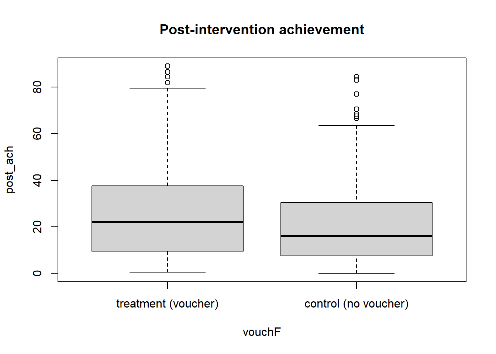
3.3.4.1 Extra Plotting Stuff
If you have patience and are curious, make a slightly fancier version of this plot:
We can add colors or shades. We can also add a point for each group’s mean. Let’s use the grpm object we created using aggregate() to tell R where to add points:
boxplot(post_ach ~ vouchF,
data = ny,
names = c('Treatment (voucher)', 'Control (no voucher)'),
cex.axis = 1.25,
main = "Post-intervention achievement",
cex.main = 1.5,
col = c("ivory", "gray"))
points(1:2, grpm$post_ach, col = "black", pch = 19)
text(1:2, grpm$post_ach + 4, labels = round(grpm$post_ach, 2)) 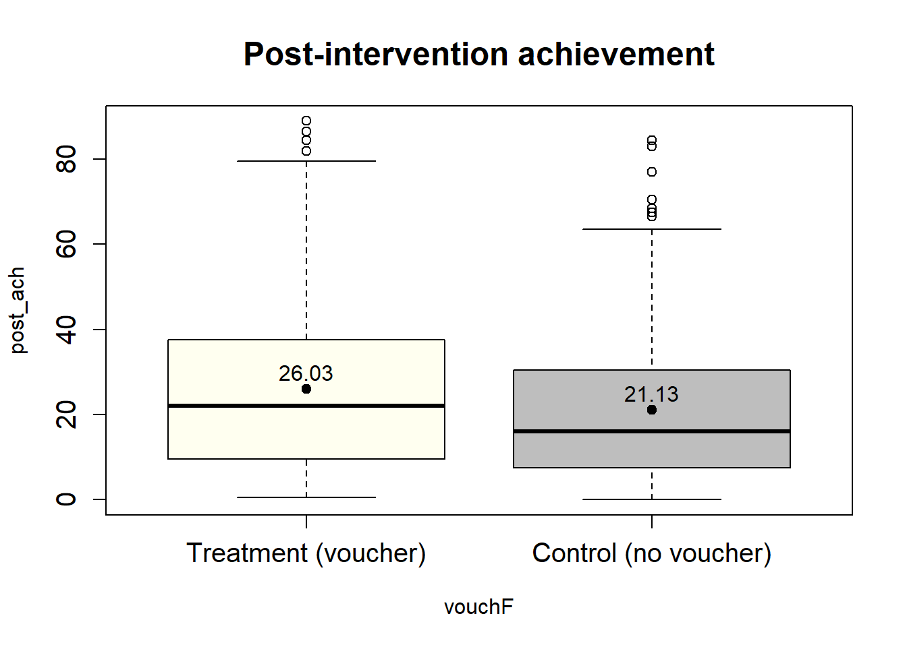
We’ve added some things: We’ve made the group names 25% bigger with cex.axis = 1.25; (note that cex stands for character expansion", with 1 being 100%, positive values < 1 making it smaller, & values > 1 making bigger); we’ve made the main plot label 50% bigger, cex.main = 1.5; we’ve specified colors (col =) for the two groups (you can look up other color names or try out standard names); and we’ve added points in the order that are in the grpm data frame we created, along with their color and the type of plotting character for the point (pch =). You can see more types of plotting character points in help by running ?pch. Try pch = 18, or 23 in your plot to see different results (though you may have to clear the earlier plots). The text line adds text to the points, from the grpm object, with the first argument as the position of the label and a vertical adjustment of + 4 points on the Y axis (scores). Try replacing 4 with some other number to see the result. This may look better on your screen with it set at 2. The labels of the points are the means, after rounding them to two decimal places using the round() function.
This was an example of what you can do with plots. (Plots are not a course requirement, but they can be satisfying and illustrate information about our data.) You can learn more about boxplot options in R’s help or online.
3.4 Extra Stuff
3.4.1 Using ggplot
An alternative to Base R’s plots is a ggplot. For this approach, we use the ggplot2 (Wickham, Chang, et al., 2021) package. If you don’t already have it installed, install it using install.packages("ggplot2"). It is one of many packages that are in the Tidyverse community.13
library(ggplot2)
bar <- ggplot(ny, aes(x = vouchF, y = post_ach))
bar + stat_summary(fun = mean,
geom = "bar",
fill = "aquamarine4",
color = "black") +
stat_summary(fun.data = mean_cl_normal,
geom = "errorbar",
width =.1) +
labs(x = "Voucher offer", y = "Achievement test") +
theme(text = element_text(size = 20)) +
scale_y_continuous(breaks = seq(from = 0, to = 50, by = 5))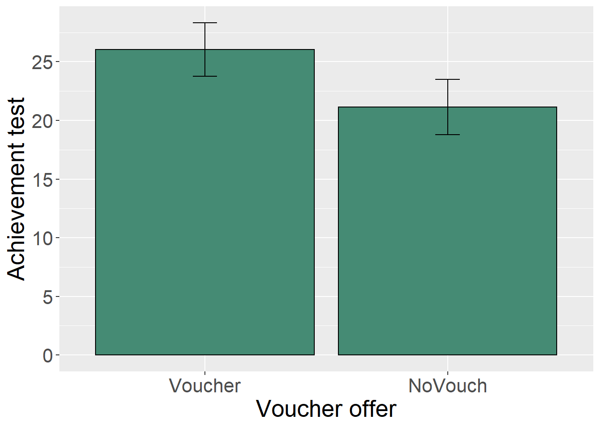
The primary function is ggplot(). Its first argument is the data frame (ny in this case). The second is the aesthetics statement aes() where we can list the X and Y coordinates.
You can specify geom = "pointrange" in place of "errorbar" to see a different version.
We created the grpmean object above to see mean of each grp. We’ll use that in this box-and-whisker plot to add a point showing the group’s mean.
grpmean <- grpm
box <- ggplot(ny, aes(vouchF, post_ach))
box + geom_boxplot( fill = "slategray3") +
stat_summary(fun = mean,
color = "darkred",
geom = "point",
shape = 18,
size = 2.5) +
theme(text = element_text(size = 20)) +
geom_text(data = grpmean, aes(label = round(post_ach, digits = 2), y = post_ach + 3.5)) +
labs(x = "Voucher offer", y = "Achievement test") +
scale_y_continuous(breaks = seq(from = 0, to = 50, by = 10))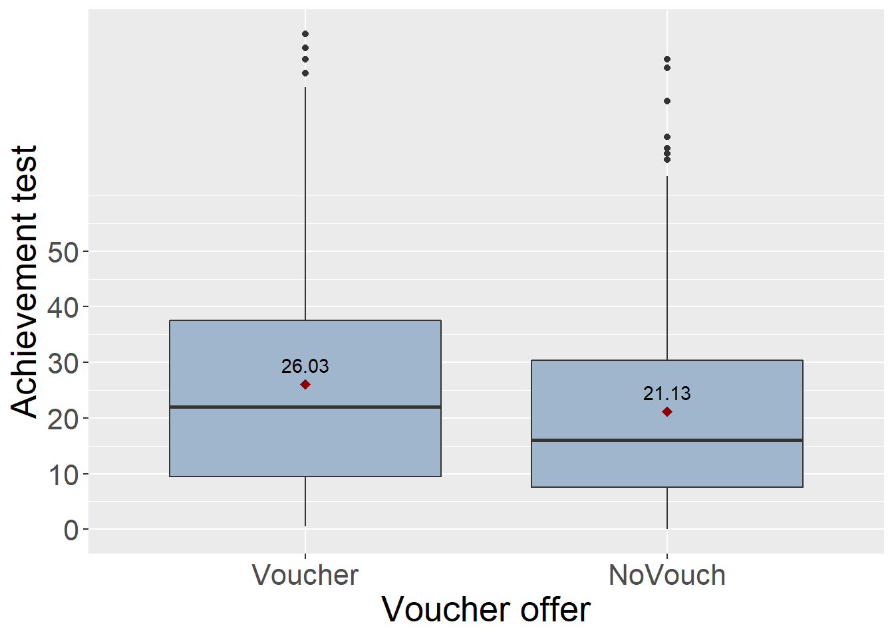
There are other ways to examine data by group:
prepost <- c("pre_ach", "post_ach") # a vector of the two variables names3.4.2 Subsetting data and separately analyzing each group
A simpler method, though less reproducible for later code, is to analyze each group on its own and then combine data. In other words, we can subset to data into the voucher group and non-voucher groups and then apply our function.
vg <- subset(ny, voucher > 0) #Voucher group
nvg <- subset(ny, voucher < 1) #No-voucher group
(vg.descr <- apply( vg[,prepost], 2, myci))## pre_ach post_ach
## N 291.000 291.000
## Var 350.589 390.221
## M 20.679 26.029
## SEm 1.098 1.158
## CI_lb 18.518 23.750
## CI_ub 22.839 28.308(nvg.descr <- apply(nvg[,prepost], 2, myci))## pre_ach post_ach
## N 230.000 230.000
## Var 311.993 330.234
## M 19.513 21.130
## SEm 1.165 1.198
## CI_lb 17.218 18.769
## CI_ub 21.808 23.491The outputs from apply() functions are matrices:
is.matrix(vg.descr)## [1] TRUEWe can round and transpose matrices:
t(round( vg.descr, 2))## N Var M SEm CI_lb CI_ub
## pre_ach 291 350.59 20.68 1.10 18.52 22.84
## post_ach 291 390.22 26.03 1.16 23.75 28.31t(round(nvg.descr, 2))## N Var M SEm CI_lb CI_ub
## pre_ach 230 311.99 19.51 1.17 17.22 21.81
## post_ach 230 330.23 21.13 1.20 18.77 23.493.4.3 The Tidyverse Approach to By-Group Analyses
Let’s use the dplyr package (Wickham, François, et al., 2021) to do a by-group analysis.
library(dplyr)We use Tidyverse’s pipe operator, %>% to take stuff on the left of this operator and then do the stuff that is on the right side. This order of syntax is more similar to how we read a language, whereas Base R operations are more mathematical, going from the inside out, such as by enclosing the first operations inside parentheses and then the next step in parentheses one layer out. Shortcut. Use Ctrl + Shift + M (or Command on Mac) to insert the Tidyverse pipe into R. The %>% pipe always goes on the same line in the code as the stuff on its left. Stuff on the right can go on the next line (or stay on that same line).
So, let’s take the data frame, ny then group it by the vouchF variable (or the voucher variable if you prefer) using the group_by() function, and after that use the summarize() function to assign the results of the mean() function to a column we’ll call M:
ny %>%
group_by(vouchF) %>%
summarize(M = mean(post_ach)) ## # A tibble: 2 x 2
## vouchF M
## <fct> <dbl>
## 1 Voucher 26.0
## 2 NoVouch 21.1Notice that our column names do not have quotes.Tidyverse often does not use quotes around column names, which is what is going on with the functions from this package.
We can save the output to an object, which we can label as mygrp_Ms. Also, Tidyverse saves data frames as tibbles. I prefer data frames, so I am adding %>% data.frame() to our syntax:
mygrp_Ms <- ny %>%
group_by(vouchF) %>%
summarize(M = mean(post_ach)) %>% data.frame()
mygrp_Ms## vouchF M
## 1 Voucher 26.02921
## 2 NoVouch 21.13043With functions that output more than one number, such as from our custom function to report the confidence-interval, the summarize() function is hard to interpret.
ny %>%
group_by(vouchF) %>%
summarize(N = myci(post_ach)) %>%
data.frame()## vouchF N
## 1 Voucher 291.000
## 2 Voucher 390.221
## 3 Voucher 26.029
## 4 Voucher 1.158
## 5 Voucher 23.750
## 6 Voucher 28.308
## 7 NoVouch 230.000
## 8 NoVouch 330.234
## 9 NoVouch 21.130
## 10 NoVouch 1.198
## 11 NoVouch 18.769
## 12 NoVouch 23.491One trick we can sometimes use is to use the index of the function and provide it a column label that it will have in the output:
ny %>%
group_by(vouchF) %>%
summarize(N = myci(post_ach)[1],
Var = myci(post_ach)[2],
M = myci(post_ach)[3],
SEm = myci(post_ach)[4],
CI_lb = myci(post_ach)[5],
CI_ub = myci(post_ach)[6],) %>%
data.frame()## vouchF N Var M SEm CI_lb CI_ub
## 1 Voucher 291 390.221 26.029 1.158 23.750 28.308
## 2 NoVouch 230 330.234 21.130 1.198 18.769 23.491It can be risky using numbers in the indexes if we had changed the function. Above, we assumed that N was the first index, Var was the second, and so forth. We can look at our function to see what the last line is and see how we had ordered these in the output:
myci## function(x){
## m <- mean(x)
## v <- var(x)
## n <- length(x)
## se <- sqrt(v/n)
## tcut<- qt(.975, df = n-1, lower.tail = T) # qnorm(.975, lower.tail = T)
## moe <- tcut*se
## lb <- m-moe
## ub <- m+moe
## ci <- c(lb,ub)
## round( c(N=n, Var=v, M=m, SEm=se, CI_lb=lb, CI_ub=ub),3)
## }
## <bytecode: 0x00000000126e1178>The last line, round( c(N=n, Var=v, M=m, SEm=se, CI_lb=lb, CI_ub=ub),3), includes my variables, so the first index is N, the second is Var, and so forth.
It is probably safer to use these names in the index instead of the numbers.
my_CIs <- ny %>%
group_by(vouchF) %>%
summarize(N = myci(post_ach)["N"],
Var = myci(post_ach)["Var"],
M = myci(post_ach)["M"],
SEm = myci(post_ach)["SEm"],
CI_lb = myci(post_ach)["CI_lb"],
CI_ub = myci(post_ach)["CI_ub"],) %>%
data.frame()
my_CIs## vouchF N Var M SEm CI_lb CI_ub
## 1 Voucher 291 390.221 26.029 1.158 23.750 28.308
## 2 NoVouch 230 330.234 21.130 1.198 18.769 23.4913.4.4 Plotting summary statistics
Using the ggplot() function from the ggplot2 package, we can create a plot based on the summary report, which we had saved as a data frame in the object my_CIs. We can pipe in the data frame to the ggplot() function (though we coud have used ggplot(data = my_CIs,... ) instead). Within the ggplot() function, there are +s between each line, which adds stuff to the plot.
library(ggplot2)
my_CIs %>%
ggplot(aes(x = vouchF, y = M, fill = vouchF)) +
geom_col() +
geom_errorbar(aes(ymin = CI_lb, ymax = CI_ub), width = .2) +
scale_fill_viridis_d(begin = .2, end = .9, guide = "none")+
labs(x = "Voucher offer", y = "Achievement test") +
theme(text = element_text(size = 20)) +
scale_y_continuous(limits = c(0, 40),
breaks = seq(from = 0, to = 40, by = 5))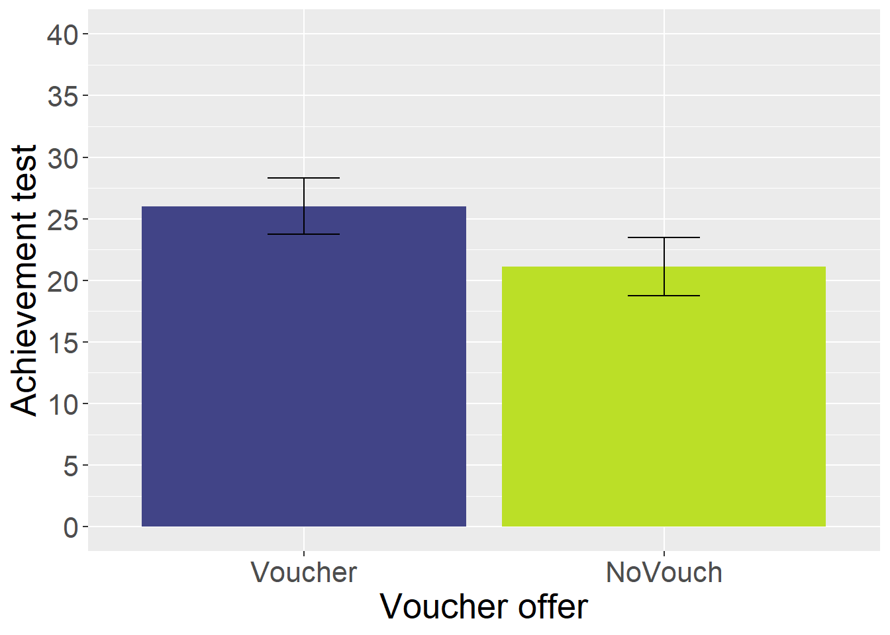
So, what we’ve done is taken the data frame my_CIs and piped it into the ggplot() function. For the aesthetics—that is, for defining what goes in the map of plot—we specified the X and Y axes and we added one called fill =. Here, the X axis was our grouping variable and the Y axis was the mean of the post_ach, which in our data frame is the column labeled M. The fill = vouchF defined which variable to use when we filled in colors of areas in the plot.
The next line is the type of geometric shape to include in the plot. These are called geoms in ggplot2. Here, we’ll use a column plot, so let’s use geom_col(). Typically, when we plot a bar plot of data that are already summarized, we use this geom. If we use raw data with a stat_summary() function, as we did a few steps earlier, we could use a bar plot, such as geom_bar().
The geom_errorbar() adds a new geom to the plot. This is an error bar. Some geoms require aesthetics. Here, we need to specify the ymin = and ymax = aesthetics. We could use something like ymin = M - SEm if we wanted the margin of error to be one standard error in length. In our plot, we are using the confidence interval that we calculated based on the t-statistic, so the bottom and top of the error bar in each group is its CI_lb and CI_ub, which are columns in our data frame of the summary statistics. The width = specified the width of the line in the error bar.
The scale_fill_viridis_d(begin = .2, end = .9, guide = FALSE) line is optional. It changes the color palette to be more amenable to most types of color blindness. The guide = FALSE removes the legend. The begin = and end = specify the range in the palette to use, with the default being 0 and 1 respectively.
The scale_y_continuous() line allows us to specify the boundaries of the Y axis and what the interval of the breaks for labeling. We could have set the limits to 0 and 100 to allow for the full range on the outcome variable. This would display a more accurate picture of the outcome variable and how much better the voucher group did in that original scale.
References
An easier-to-read method would be to create a custom function first and then use that in the
apply()function in place of all of thisfunction(x) sum(is.na(x))business.↩︎Bonus: we can use the
formatC()function to format the character to have a specified width with leading zeroes; e.g.,rownames(ny) <- formatC(ny$s_id, width = 5,format = "d", flag = "0").↩︎Functions, like objects, also should begin with a letter and not include special characters except for underscores and maybe periods.↩︎
Sometimes, people calculate the 95% confidence interval around the mean as \((mean ±2*std.error)\) to get a rough estimate of these two values. Compare
qt(.975, df=520, lower.tail=T)andqnorm(.975, lower.tail = T).↩︎The
apply()function will not work with a single column.↩︎We can set the Y axis limits, too, with
ylim =.↩︎Sometimes
as.data.frame()works.↩︎We can install multiple Tidyverse packages at one time once using
install.packages("tidyverse").↩︎